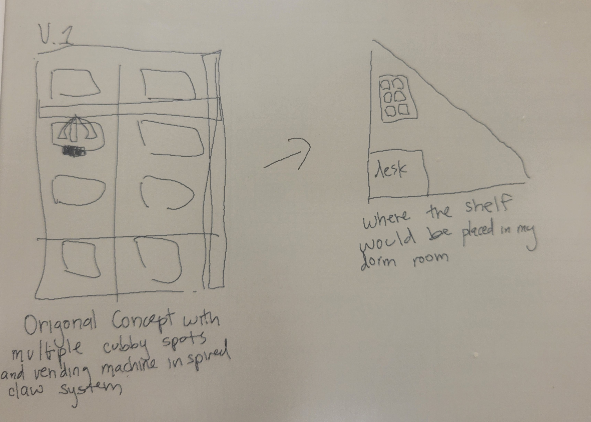
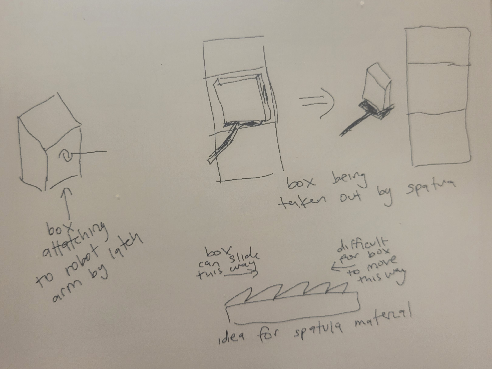
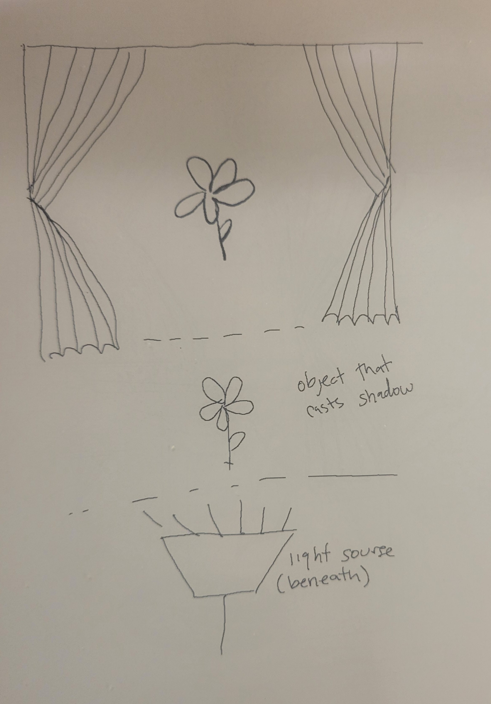

PS70: Intro to Digital Fabrication</span>PS70: Intro to Digital Fabrication
<div class="textcontainer">
<br></br>
<h3><span style="color: #0000ff;">Week 1: Final Project Proposal</h3>
<p class = "margin"></p>
Here are my ideas for my final projects!
<p class = "margin"></p>
<h4><span style="color: #0000ff;">Idea #1 : Out of reach shelf with with robotic graber</h4>
<p class = "margin"></p>
<p>Part of my dorm room has really high walls. I can't store anything there becuase my arms are sadly length deficient. add a picture of space in my room. My idea is to make a shelf that has a robot arm. The shelf could be placed up high and the robot arm could grab items for me. </p>
<p><br />I have some ideas for different ways my robot could grab things from the shelf. I could have a box on my shelf which would attach to my robot arm. I'm thinking I could use a similar box to this.<img src="boxes.png" alt="" /></p>
<p>My first idea was to have some sort of locking mechanisim between the box and roobot arm. I could also use a spatuala design to pic up the boxes. Perhaps I could cover my spatuala in a type of skin/fabirc that moves easily in one direction and resists movement in another direction. I'm hoping this might help me keep my room clean. I am not sure if I want my robot to be able to put multiple boxes on the the shelf. If I did this I was thinking of having a cubby style design. <br>
</p>
<p class = "margin"></p>
<h4><span style="color: #0000ff;">Idea #2: Shadow puppet theater</h4>
<p class = "margin"></p>
I could have machine with moving parts behind a light sourse. they could move to make different shaped shadows which I want to look like reconziable things. insert sketch of idea. I am inspired by people who can use their fingers to make shadows that look like animals. insert image of this. I would like the create images of different types of leaves and flowers. <br>

<p class = "margin"></p>
<h4><!-- idea 3 --> </h4>
<p class = "margin"></p>
<!-- Idea 3 Description -->
</div>